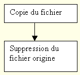
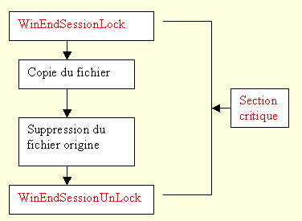

La plupart du temps, il n’y a pas besoin pour le programmeur Harmony de s’occuper de la fermeture de session Windows. Les programmes sont habituellement interactifs et l’utilisateur peut annuler la demande de fermeture de session.
Il en va autrement pour les programmes qui tournent en tâche de fond ou qui sont des services Diva (Cf. manuel de référence d'Harmony).
Ces programmes ne font aucun affichage et ils acceptent toujours de s’arrêter lorsque Windows le leur demande. Or, il se peut que l’arrêt d’un programme à n’importe quel moment de son exécution introduise des erreurs dans la logique du programme.
Prenons par exemple, un programme qui scrute un répertoire et pour chaque fichier rencontré, copie le fichier dans un autre répertoire et le supprime du répertoire d’origine.

Si le programme est interrompu entre la copie et la suppression du fichier, ce fichier sera à nouveau traité lors du redémarrage du programme, alors qu’il ne devrait pas l’être.
Les instructions WinEndSessionLock et WinEndSessionUnLock permettent de résoudre ce problème en introduisant une section critique qui ne peut être interrompue. Pendant que le code encadré par ces deux instructions s’éxécute, le programme refuse la fermeture de la tâche. Attention, cette section critique doit être la plus courte possible, car Windows n’attend pas indéfiniment. Au bout d’un certain temps, la tâche sera tuée par la système.
